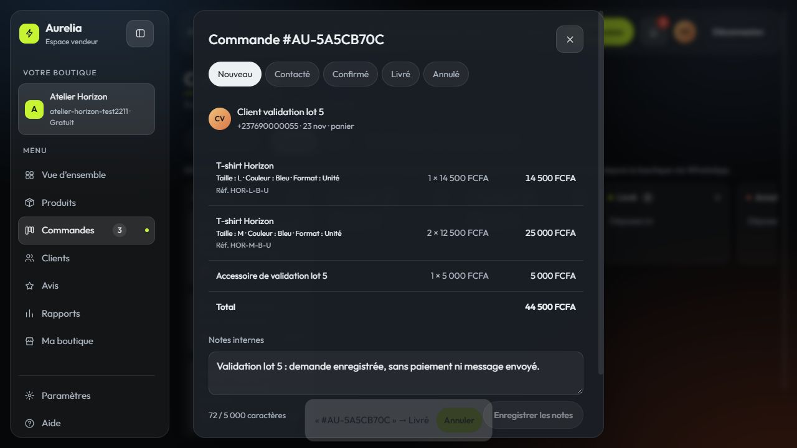
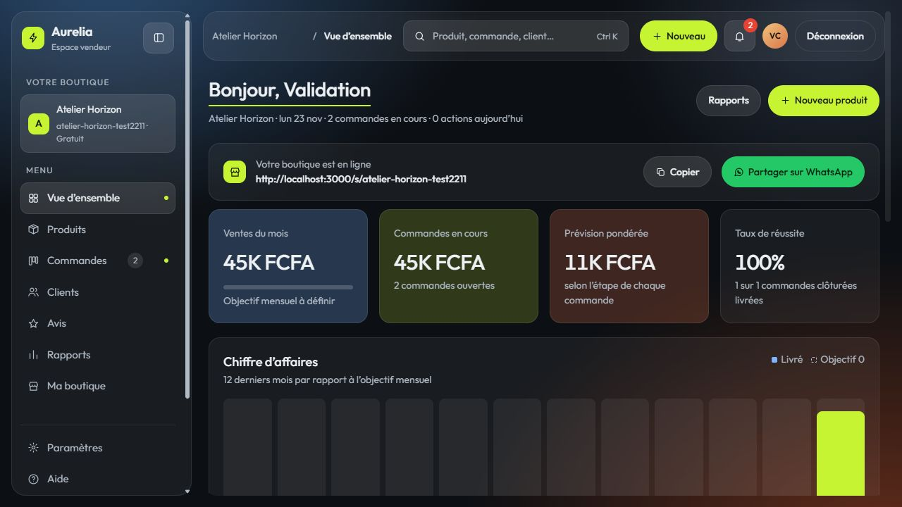
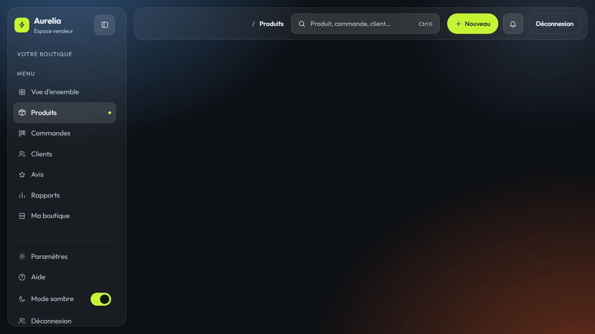
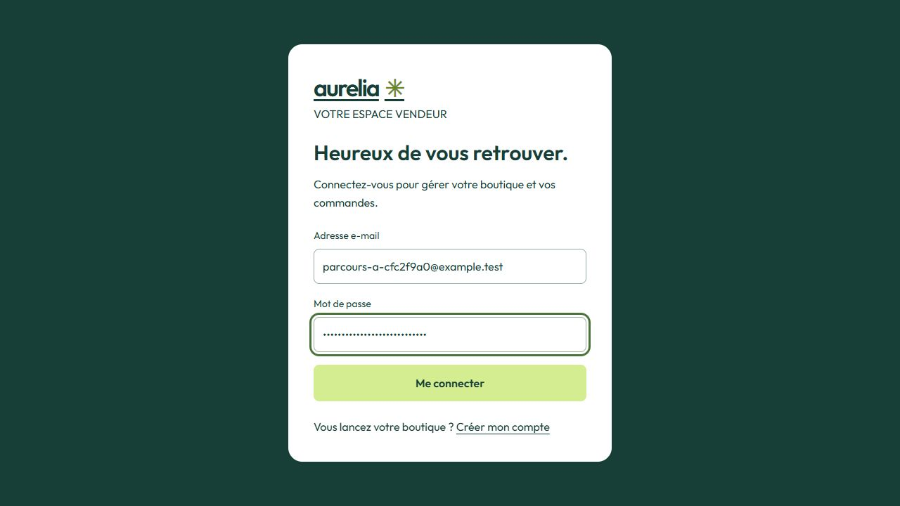

23 novembre 2026 · Branche feature/validation-complete-lot-5. Le lot d’images locales ayant été ajouté au plan, cette étape reprend la validation complète initialement prévue après les variantes.
Les 9 produits présents au début du lot, leurs prix, stocks, images et données historiques sont inchangés. Les 5 catégories, le client, la commande et sa ligne, les événements et l’identité visuelle sont conservés. Les 3 fichiers d’images ont été comparés à la sauvegarde par SHA-256 : contenu identique.
Sauvegarde privée : .local/backups/validation-lot5-2026-11-23, contenant la base et le dossier d’images. Aucune migration de schéma dans ce lot. Comparaison finale détaillée.
| Validation | Résultat |
|---|---|
| Suite automatisée isolée | 70 tests réussis, 0 échec |
| PostgreSQL natif | 58 contrôles/tests réussis : SaaS 17, catalogue 9, identité 8, variantes 8, médias 8 et parcours complet 8 |
| Compilations | Front et dashboard réussis |
| Parcours navigateur | Création avec photo locale, panier mixte, brouillon WhatsApp, commande, notes, livraison, ventes, actualisation et connexion entre deux vendeurs vérifiés |
| Mobile | Fiche/panier à 390 et 320 pixels ; commande à 320 pixels sans débordement |
Le nouveau test de bout en bout côté serveur combine inscription, personnalisation, upload, catégories, variantes, commande mixte, isolation, historique immuable et redémarrage. Exécuter npm run test:journey:postgres pour le rejouer sur la base locale ; il conserve ses boutiques de test distinctes.
Dans Atelier Horizon, un produit simple à 5 000 FCFA a été créé depuis le formulaire avec une photo importée. Un panier contenant ce produit et deux variantes du T-shirt a produit la demande AU-5A5CB70C : 2 × 12 500 + 1 × 14 500 + 1 × 5 000 = 44 500 FCFA.
Le brouillon WhatsApp contenait les options, références et montants calculés par le serveur ; il a été fermé sans envoyer de message. La commande et ses notes ont été enregistrées, puis le statut est passé à « Livré ». Les trois lignes et le total ont été revérifiés dans PostgreSQL. Preuve de commande.


Les indicateurs utilisent un affichage compact : 45K correspond ici à 44 500 FCFA, montant exact conservé dans la commande et dans les données du rapport.
Connexion au second vendeur : catalogue vide et ventes nulles. Après déconnexion puis connexion au premier vendeur, ses deux produits sont retrouvés ; aucun catalogue de l’autre compte n’est réutilisé.


Validation locale sur PostgreSQL natif. L’hébergement public HTTPS et le futur stockage externe ne sont pas configurés ni testés. Les nouvelles demandes ne sont pas diffusées en temps réel ; utiliser l’actualisation. Le concept WhatsApp reste inchangé : pas de paiement ni de réservation/décrémentation automatique du stock. Les données de validation sont conservées dans des boutiques distinctes de Yanshop.